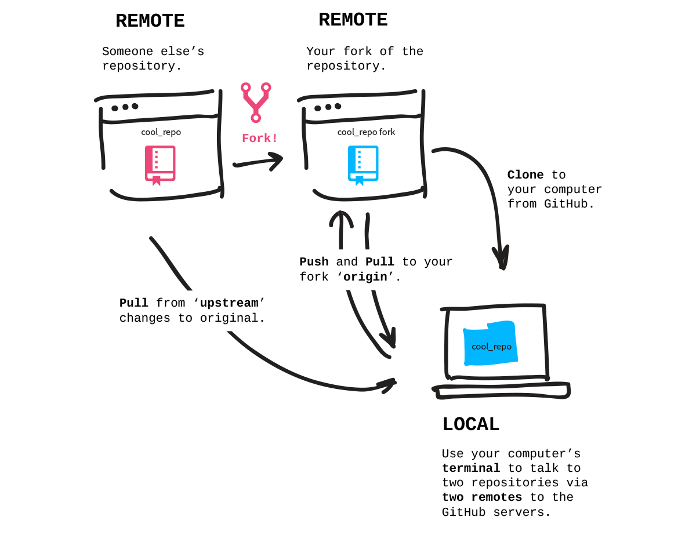

关卡内容：
从 GitHub.com 建立项目 fork，并 clone 到电脑上。
Forks
你已经在电脑上建立了一个项目并且 push 到 GitHub 上，但有趣的不仅如此，更重要的是与人们在不同的项目中合作。
当你 fork 一个 repository 时，实际上是复制了一份 repository 到自己的 GitHub 账号下，换句话说，你的 fork 成为了一个 remote repository。通常我们通过 forks 用来建立自己所需使用的修改版本，或是协助原始项目修正错误、新增功能。
当你成功 forked 项目后，便可以从 GitHub 将它 clone 到你的电脑上。这样一来就可以在没有网络连接的情况下，修改电脑里的项目内容。

步骤：Fork Patchwork Repository
我们接下来要使用的项目是 github.com/jlord/patchwork。到页面上点击右上方的 fork 按钮，当 fork 的动画完成时，你的账号中就会出现一份 Patchwork 项目的副本。接下来，把在右边侧栏的 HTTPS clone URL 复制起来。
步骤：在电脑上 Clone Fork
现在，在终端 clone repository 到你的电脑上，他会自动替 repository 建立一个新的文件夹，所以你不需要自己建立一个。但请注意不要在另一个 Git repository 文件夹中 clone！所以，如果你还在先前挑战所使用的 'hello-world' repository 中，请先离开那个文件夹。你可以通过切换文件夹之类以及两个点来移动到文件夹的上一层：
$ cd ..
然后 clone：
$ git clone <URLFROMGITHUB>
切换到刚刚建立的 fork 文件夹（在这个例子中叫做 'patchwork'）：
$ cd patchwork
现在你已经在电脑上得到了一份 repository 的副本，并且被自动连接到你 GitHub 账号下的 remote repository（你的 fork 副本）。
步骤：连接到原始的 Repository
但如果原始项目的内容有改变了呢？你会希望能够 pull 这些变更。所以让我们来新增另外一个 remote 链接到原始的项目 github.com/jlord/patchwork，repository 的 URL 可以在 GitHub 原始项目的侧边栏下方找到。
你可以随意替这个 remote 链接命名，但大家通常用 'upstream'，让我们也用这个名字：
$ git remote add upstream https://github.com/jlord/patchwork.git
确认你完成了所有步骤：
git-it verify
前往下一个关卡
git-it
提示
- 新增 remote 链接
$ git remote add <REMOTENAME> <URL>- 查看 remote 链接
$ git remote -v